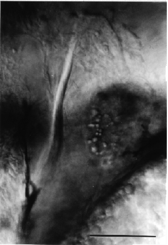

Modified from: Kimmel et al., 1955. Developmental Dynamics 203:253-310. Copyright © 1995 Wiley-Liss, Inc. Reprinted only by permission of Wiley-Liss, a subsidiary of John Wiley & Sons, Inc.
Fig. 43. The appearance of the cleithrum, the first easily visible bone, marks the end of embryogenesis. Left side Nomarski view, dorsal the top, anterior the left at the protruding-mouth stage (72 h). The cleithrum, forming as a transversely oriented rod of dermal acellular bone, is homogeneous in structure and refractile in appearance. The granular pronephric kidney is also in the field of view to the right, posterior the cleithrum and dorsal to the yolk sac. Scale bar: 50 µm.

Figure 43